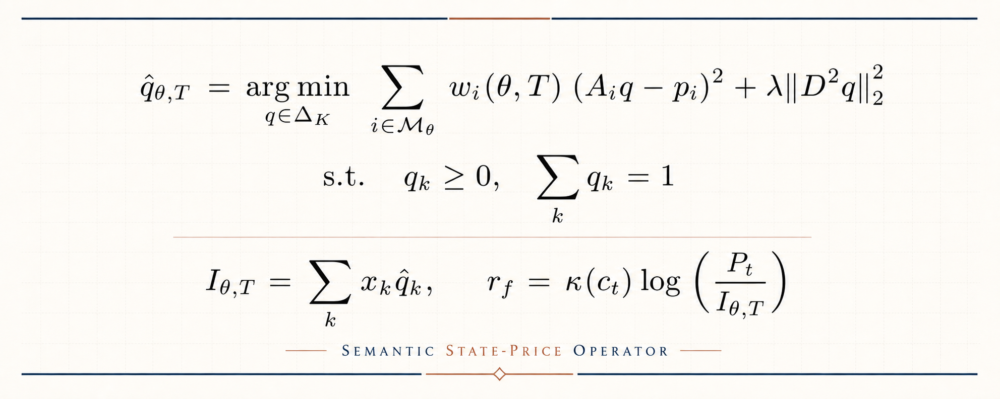

Semantic State Prices: Inferring Latent Indices from Prediction-Market Event Securities
Abstract
Prediction markets trade thousands of binary contracts whose payoffs are tied to future states of the world. These contracts are usually interpreted one at a time: a probability that Bitcoin will exceed a threshold, that a city temperature will fall in a range, that the Federal Reserve will choose a rate, or that a private company will reach a valuation. This paper develops a framework for interpreting collections of related prediction-market contracts as noisy state-price surfaces over latent variables. The method maps natural-language event rules into payoff functions, projects observed prices onto the nearest coherent distribution over an underlying state, and reports the resulting expectation as a tradable index candidate. The same construction yields an oracle design for perpetual futures on states that do not have spot markets.
The empirical section validates the method across two venues. On Polymarket, Bitcoin and Ethereum terminal threshold ladders over eight dates each are reconstructed from direct CLOB price history and compared with realized CoinGecko spot prices. On Kalshi, a larger panel of 195 city-date temperature ladders, comprising 7,496 hourly snapshots across New York, Chicago, and Miami from March 1 to May 4, 2026, is projected into daily high-temperature distributions and compared with NOAA/NCEI daily maximum temperatures. The Kalshi panel shows mean absolute error of 2.07F at 48 hours before close, 1.69F at 24 hours, and 1.02F at final pre-close, with final modal-bucket accuracy of 86.2%. The paper then demonstrates the method on a non-traded private-company state: OpenAI's 2027 IPO valuation. Polymarket valuation contracts imply a 29.8% no-IPO probability, a $932B unconditional valuation index, and a $1.328T valuation conditional on IPO. Hyperliquid pre-IPO perps provide an external live benchmark: vntl:OPENAI marks near $1.112T in the same valuation units.
The contribution is an inverse option-pricing operator for prediction markets. Standard derivative pricing begins with a traded underlying and prices contingent claims from it. Semantic state pricing begins with contingent claims written in natural language and infers the missing underlying.
1. Introduction
Modern prediction markets increasingly resemble an option market over reality. They do not merely ask who wins an election. They list thresholds, ranges, brackets, and conditional events over macroeconomic releases, crypto prices, public equities, weather, sports, geopolitics, technology adoption, and private-company outcomes. A single market says whether Bitcoin settles above a strike at a timestamp. A strip of such markets says much more: it traces a discrete survival curve over the terminal price. A market on OpenAI's IPO valuation above $1T is not a spot price for OpenAI, but it is a state-contingent security over OpenAI's future valuation. A collection of such securities can imply a distribution over an otherwise untraded variable.
The paper formalizes that observation. Let X_T denote a latent future state: a price, valuation, weather outcome, policy setting, capability index, or local real-estate level. Each prediction-market contract is treated as a binary security whose payoff is a function of X_T and possibly auxiliary states. Natural-language market rules determine the payoff function. Observed market prices provide noisy estimates of state-contingent probabilities or risk-neutral prices. A constrained projection then recovers a coherent distribution over X_T from the noisy and sometimes inconsistent market observations.
This is the reverse of the Black-Scholes direction. Black and Scholes price options from an observed underlying. Breeden and Litzenberger show how state prices can be recovered from option prices when the option surface is sufficiently complete. Prediction markets create a more irregular but broader object: an option surface over arbitrary real-world states, written in natural language and scattered across venues. The problem is not only financial interpolation. It is semantic extraction plus coherent projection.
The practical motivation is straightforward. Most economically important variables lack continuous spot markets. Private-company valuations, city-level real estate, AI capability leadership, policy severity, regulatory risk, and geopolitical intensity are priced sporadically. Prediction markets can supply fragmented contingent claims over these variables. If these fragments can be composed into a coherent index, that index can serve as the oracle for perpetual futures or structured products.
The paper makes four claims:
- Collections of binary prediction markets can be modeled as noisy state-price observations over latent variables.
- Natural-language market rules can be mapped into payoff functions over those variables.
- Constrained projection can convert inconsistent event prices into coherent distributions.
- The resulting distribution can support a rolling oracle, provided manipulation risk is explicitly controlled.
The empirical evidence is intentionally divided into public and private cases. Public cases have known realized outcomes and therefore validate the projection machinery. Private cases have no spot price and demonstrate the intended application.
2. Related Work
The paper sits at the intersection of option-implied state prices and prediction-market aggregation.
Black and Scholes (1973) and Merton (1973) provide the canonical route from an underlying price process to option prices. Breeden and Litzenberger (1978) invert part of that relationship by recovering state-contingent claim prices from derivatives of call prices. The present paper keeps the inversion but changes the input: instead of a smooth exchange-traded option chain, the surface consists of binary event contracts with heterogeneous text, maturity, liquidity, and resolution rules.
Prediction markets have long been studied as information aggregation mechanisms. Wolfers and Zitzewitz (2004) survey market design and accuracy. Arrow et al. (2008) argue for prediction markets as mechanisms for aggregating dispersed information. Manski (2006) and Wolfers and Zitzewitz (2006) clarify when prices can be interpreted as probabilities and when equilibrium prices differ from simple mean beliefs. Hanson (2003) develops market scoring rules that are foundational for automated market makers in prediction markets.
This paper differs from that literature in its object of inference. It does not ask whether a single prediction-market price is a calibrated probability. It asks whether many related event prices can be composed into a distribution over a latent continuous or ordinal state. In this sense the paper treats prediction markets as an irregular semantic option surface. The main technical challenge is not merely extracting probabilities. It is recovering a coherent underlying state distribution from markets that were not designed as a formal option chain.
3. Semantic State-Price Model
Let:
X_T = latent state at horizon TX_T can be a traded public price, a private valuation, an official weather statistic, a policy setting, or a constructed index. Each prediction-market contract i has:
p_i observed YES price
e_i event text and resolution rule
A_i(x) payoff probability if X_T = x
w_i confidence weight
T_i resolution time
L_i liquidity, depth, and spread featuresFor direct threshold markets:
"Bitcoin above $76,000 on April 10?"
A_i(x) = 1{x > 76000}For direct range markets:
"High temp in NYC is 64-65F on May 7?"
A_i(x) = 1{64 <= x <= 65}For private-company valuation markets:
"OpenAI IPO closing market cap above $1T by Dec. 31, 2027?"
A_i(x) = 1{x >= 1000B and IPO occurs by T}For semantic proxy markets:
"Will Anthropic have the best AI model by year-end?"
A_i(x) = sigmoid(alpha_i + beta_i log(x) + gamma_i controls_i)The semantic layer maps the text and rules into A_i. It does not set prices. Pricing comes from observed markets; coherence comes from projection.
Represent the latent distribution on a grid:
q_k = P(X_T in bucket k)Let A be the matrix whose i,k entry is the payoff of market i in state bucket k. The estimated distribution solves:
min_q sum_i w_i (A_i q - p_i)^2 + lambda R(q)
subject to:
q_k >= 0
sum_k q_k = 1
monotone threshold probabilities
coherent mutually exclusive bracketsR(q) is a smoothness or regularization penalty. It can be omitted for simple range partitions and increased when the state grid is dense.
The index is:
I_T = E_q[X_T]For valuation-like variables, log space may be more stable:
I_T = exp(E_q[log X_T])For IPO markets, include a no-IPO atom:
q_0 = P(no IPO by T)
I_unconditional = sum_{k>0} q_k x_k
I_conditional_IPO = sum_{k>0} (q_k / (1 - q_0)) x_k
4. Market Selection and Semantic Weights
Prediction-market data is not a clean option chain. It contains stale markets, ambiguous rules, overlapping outcomes, wide spreads, and idiosyncratic settlement details. The weighting function therefore matters.
A practical source weight is:
w_i =
liquidity_i^a
* relevance_i^b
* specificity_i^c
* exp(-eta * semantic_distance_i^2)
* exp(-nu * maturity_mismatch_i)
* 1 / noise_i^2where:
liquidity_icaptures volume, open interest, order-book depth, and quote freshness.relevance_imeasures how closely the event loads on the target state.specificity_ipenalizes vague or multi-causal events.maturity_mismatch_ipenalizes events resolving far from the target horizon.noise_icaptures bid/ask width, rule ambiguity, and historical reliability.
Direct markets, such as temperature ranges or crypto thresholds, have payoff maps that are essentially deterministic. Semantic proxy markets require learned or hand-specified link functions. A model-ranking market may load positively on an AI-company valuation index, but with lower specificity and higher model risk than a direct valuation threshold.
5. Rolling Perpetual Oracle
A perpetual future cannot be anchored to a single fixed-expiration ladder. The oracle should maintain a constant maturity:
OPENAI-365 = market-implied OpenAI valuation 365 days forwardAt each update:
- New source markets enter if they pass semantic and liquidity filters.
- Stale prices are excluded or downweighted.
- Near-expiry markets decay in forward relevance.
- Resolved markets become calibration observations.
- The latent distribution is refit.
- The index rolls back to constant maturity.
Funding can use the standard mark-versus-oracle form:
funding_rate = k(confidence) * log(perp_mark / oracle_index)Confidence should determine leverage, open-interest caps, funding caps, and pause conditions. A minimal confidence function should include:
confidence = f(
projection_residual,
semantic_coverage,
source_market_depth,
bid_ask_spread,
constituent_concentration,
estimated_attack_cost / perp_open_interest
)This last term is essential. If a perp has large open interest and the source markets are thin, a trader can profit by manipulating the source markets that feed the oracle.
6. Data
The empirical artifact uses:
- Polymarket CLOB price history and order-book endpoints.
- Kalshi market and candlestick endpoints.
- Normalized Polymarket/Kalshi market catalog snapshots for market discovery.
- NOAA/NCEI daily weather summaries for realized temperature outcomes.
- CoinGecko crypto spot data for realized BTC/ETH terminal prices.
- Hyperliquid perpetual-market data for private-company perp benchmarks.
The market-surface inventory shows that the object is broader than one OpenAI ladder. Polymarket contains matched surfaces in crypto terminal prices, private-company valuation, AI capability semantics, macro policy, public equity/index events, and weather/climate. Kalshi has recurring series for BTC and ETH ranges, Nasdaq-100 ranges, CPI, Core CPI, Fed funds, and city high-temperature ranges.
The empirical tests below use only the market families that can be cleanly mapped to realized outcomes or private valuation ladders in the current artifact.
7. Empirical Results: Polymarket Crypto Ladders
The Polymarket validation uses public assets with observed terminal prices. For each date, markets of the form:
Will the price of Bitcoin be above $K on DATE?define a digital strip P(S_T > K). The projection converts the strip into a distribution over terminal price intervals.
The current Polymarket panel covers eight BTC dates and eight ETH dates from April 10 to April 17, 2026, using direct CLOB batch-prices-history. It contains 120 hourly BTC snapshots and 141 hourly ETH snapshots.
Table 1. Polymarket crypto validation.
| Asset | Dates | Snapshots | Reference | Mean as-of error | Mean last error | Mean last realized-bucket probability |
|---|---|---|---|---|---|---|
| BTC | 8 | 120 | CoinGecko BTC-USD | $798 | $451 | 0.732 |
| ETH | 8 | 141 | CoinGecko ETH-USD | $26 | $20 | 0.685 |
The result is not intended to prove that prediction markets forecast spot prices better than liquid crypto markets. The narrower claim is that binary event strips can be reconstructed mechanically into coherent distributions whose high-probability intervals often contain the realized terminal value.

8. Empirical Results: Kalshi Multi-Month Temperature Panel
The strongest current validation is the Kalshi weather panel. Weather has three advantages: the contracts are recurring, the state variable is continuous but discretized by ranges, and realized outcomes are available from official NOAA/NCEI daily summaries.
The panel uses high-temperature range contracts for New York City, Chicago, and Miami from March 1 to May 4, 2026. Each city-date has a small mutually exclusive ladder such as:
<64F, 64-65F, 66-67F, 68-69F, 70-71F, >71FEach hourly snapshot is normalized into a distribution over temperature buckets and converted into an expected high temperature. The reference value is NOAA/NCEI TMAX.
Table 2. Kalshi temperature panel coverage.
| Quantity | Value |
|---|---|
| Cities | 3 |
| Dates per city | 65 |
| Date-city panels | 195 |
| Hourly snapshots | 7,496 |
| Actual source | NOAA/NCEI daily summaries |
Table 3. Horizon robustness.
| Snapshot | N | Mean absolute error | Median absolute error | Mean actual-bucket probability | Modal accuracy |
|---|---|---|---|---|---|
| 48h before close | 195 | 2.07F | 1.31F | 0.281 | 0.369 |
| 24h before close | 195 | 1.69F | 1.24F | 0.373 | 0.549 |
| Final pre-close | 195 | 1.02F | 0.53F | 0.843 | 0.862 |
The monotone improvement across horizons is important. At 48 hours, the market-implied distribution is wider and less concentrated on the realized bucket. At 24 hours, the expected value improves and modal accuracy rises. Near close, the distribution typically collapses around the realized outcome. This is the expected behavior of a market-implied state distribution.

The city-level results are heterogeneous. Miami is easiest in the current sample, with final modal accuracy of 100%. New York also performs strongly, with final modal accuracy of 96.9%. Chicago is weaker, with final modal accuracy of 61.5%, producing most of the panel's final error. This matters for the general framework: source-market quality varies by market family, venue, and underlying. A production oracle should learn reliability by family rather than assume all event markets are equal.
9. Private-Company Demonstration: OpenAI 2027
The private-asset demonstration uses OpenAI 2027 IPO valuation markets on Polymarket. The relevant state has a no-IPO atom and valuation buckets conditional on an IPO.
The raw ladder is not coherent. Some bracket probabilities sum above one and some threshold probabilities violate monotonicity. This is precisely why projection is necessary.
The fitted distribution implies:
Table 4. OpenAI 2027 projected valuation distribution.
| Quantity | Value |
|---|---|
| No-IPO probability | 0.298 |
| IPO probability | 0.702 |
| Expected valuation, unconditional | $932B |
| Expected valuation, conditional on IPO | $1.328T |
This is not an assertion that OpenAI is worth exactly $932B. It is a market-implied state index from a specific set of noisy prediction-market claims.
10. Live Perp Benchmark: Hyperliquid Pre-IPO Markets
Hyperliquid provides a useful external benchmark because builder-deployed vntl pre-IPO perps already trade OpenAI, Anthropic, and SpaceX in units of company valuation billions. If OPENAI = 500, the implied valuation is $500B.
Table 5. Hyperliquid private-company perp benchmark.
| Market | Mark | Oracle | Mark/oracle | Open interest | 24h volume | Mean annualized funding |
|---|---|---|---|---|---|---|
| ANTHROPIC | $1.157T | $974B | 18.71% | $6.89M | $0.94M | 127.20% |
| SPACEX | $1.832T | $1.647T | 11.19% | $3.39M | $1.19M | 31.44% |
| OPENAI | $1.112T | $1.023T | 8.61% | $3.35M | $0.52M | 24.76% |
The OpenAI comparison is especially useful:
Table 6. OpenAI state-price and perp comparison.
| Source | Value |
|---|---|
| Polymarket unconditional index | $932B |
Hyperliquid vntl:OPENAI oracle | $1.023T |
Hyperliquid vntl:OPENAI mark | $1.112T |
| Polymarket conditional-IPO valuation | $1.328T |
The Hyperliquid mark lies between the unconditional and conditional Polymarket values. That relationship is consistent with the interpretation that prediction-market binaries infer state-contingent distributions, while the perp mark reflects a tradeable synthetic exposure with funding and risk premia.

11. Manipulation and Oracle Safety
An oracle built from prediction markets is exposed to source-market manipulation. The correct unit of risk is not only prediction error; it is index movement per dollar of source-market pressure.
Define:
s_i(delta) = |I(p_i + delta) - I(p_i)|
C_i(delta) = displayed source-market depth crossed to move p_i by delta
V_i(delta) = s_i(delta) / C_i(delta)For the OpenAI 2027 ladder, perturbing each source market by plus or minus five YES-probability points gives:
Table 7. OpenAI oracle stress.
| Quantity | Value |
|---|---|
| Baseline unconditional index | $932B |
| Max one-market index move | $31B |
| Median one-market index move | $8B |
| Stress confidence score | 0.967 |
Joining the same sensitivity map to live Polymarket CLOB books gives a negative result:
Table 8. Source-market displayed-depth risk.
| Quantity | Value |
|---|---|
| Source markets with books | 12 |
| Median CLOB spread | 72.9% |
| Stress directions inside spread | 14 |
| Finite crossed-depth cases | 10 |
| Median displayed notional per $1B oracle move | $13.04 |
The conclusion is not that the OpenAI oracle is ready for production. It is the opposite: a naive midpoint oracle over thin binary markets is fragile. A production system must use trade-weighted or depth-weighted TWAPs, spread penalties, source exclusion, maximum single-market influence, funding caps, and open-interest caps.
12. Discussion
The central empirical finding is that prediction-market event strips can be treated as noisy state-price surfaces. The Polymarket crypto panels validate the threshold-to-distribution mapping on public financial variables. The Kalshi weather panel validates the same mapping across a larger non-crypto sample with official settlement data. The OpenAI ladder demonstrates the private-asset use case, and Hyperliquid provides an external live perp benchmark in the same units.
The broader claim is not limited to private-company valuation. The surface inventory shows recurring state-price structures across crypto, macroeconomic releases, weather, public equity indices, and policy variables. Prediction markets are becoming a general substrate for contingent claims over the world. The paper's operator is a way to convert those claims into indices.
This generality is also the main risk. Semantic proxy markets are not direct claims. A model-ranking market may be relevant to an AI-company valuation, but the loading is uncertain and time-varying. A weather range contract is nearly deterministic conditional on the realized temperature. A private-company IPO threshold is direct but conditional on a corporate event. A geopolitical event may be related to an index but only through a complex causal path. The framework should therefore report semantic coverage and residual uncertainty rather than hide them.
13. Limitations
The paper does not claim that all prediction-market prices are unbiased probabilities. It does not claim that a thin event market can safely anchor a large perp. It does not claim that a semantic proxy can be treated as equivalent to a direct threshold. The framework is a projection operator, not a proof that the input markets are perfect.
Current limitations:
- The Polymarket crypto sample is still short: eight BTC dates and eight ETH dates.
- The Kalshi panel is robust but limited to weather; more macro and financial series should be added.
- The private-company result is a demonstration, not a validated ground-truth forecast.
- The manipulation-cost model uses displayed depth and fixed shocks, not a full TWAP adversary model.
- Semantic proxy loadings are specified conceptually but not yet estimated at scale.
These limitations are not incidental. They define the next research program.
14. Conclusion
Prediction markets are no longer merely isolated yes/no wagers. They are beginning to form a semantic option surface over real-world states. That surface is irregular, sparse, and written in natural language, but it can be projected into coherent latent distributions when related markets are mapped into payoff functions over the same target variable.
This paper proposes the semantic state-price operator:
SemanticStatePrice(target, horizon)
= Projection(
prices = prediction_market_prices,
payoffs = semantic_event_maps(target),
weights = liquidity * relevance * specificity * maturity_fit / noise,
constraints = coherence + monotonicity + smoothness
)The operator converts fragmented event securities into indices. Those indices can be validated on public variables, used to infer private variables, and potentially deployed as perpetual-futures oracles with appropriate safety constraints.
The empirical evidence now spans two venues and multiple market families: Polymarket crypto ladders, a multi-month Kalshi weather panel, an OpenAI private-company projection, and Hyperliquid pre-IPO perp benchmarks. The evidence is strong enough to motivate the framework and weak enough to keep the implementation honest. The remaining work is to expand the validation universe, estimate semantic loadings, and build a manipulation-cost model suitable for production-scale perps.
Methods
Polymarket crypto reconstruction
For each asset-date pair, the scripts identify Polymarket markets whose titles encode terminal thresholds of the form asset above $K on date. YES token IDs are pulled from a normalized market catalog snapshot. Historical prices are fetched directly from Polymarket CLOB batch-prices-history. For each hourly snapshot, the latest available YES prices define noisy survival probabilities over thresholds. A constrained least-squares projection recovers a distribution over adjacent price intervals. The expected terminal price, modal interval, and realized-bucket probability are compared with CoinGecko spot data near the resolution timestamp.
Kalshi temperature reconstruction
Kalshi high-temperature markets are grouped by city and date using series tickers KXHIGHNY, KXHIGHCHI, and KXHIGHMIA. Each city-date group contains range and tail contracts that partition the daily high temperature. Hourly candlesticks are fetched from Kalshi's market candlestick endpoint. At each snapshot, bucket prices are normalized into a discrete distribution. The expected high temperature is compared with NOAA/NCEI TMAX from the daily summaries service for stations USW00094728, USW00094846, and USW00012839.
OpenAI valuation projection
OpenAI valuation contracts are parsed into no-IPO, less-than, between, and above-threshold payoff functions. A no-IPO atom is included. The projection solves a constrained weighted least-squares problem over valuation buckets. Weights depend primarily on volume and quote history. The output is an unconditional valuation index and a conditional-IPO valuation.
Oracle stress
For each OpenAI source market, the observed probability is perturbed up and down by five percentage points. The latent distribution is refit, and the index movement is recorded. For book-depth stress, Polymarket CLOB order books are fetched for the same YES tokens. The script estimates displayed notional crossed to move each source market by the same shock. Cases where the target lies inside the current spread are flagged as midpoint-fragile rather than treated as free manipulation.
Data and Code Availability
All generated files are in artifact/semantic-state-prices/. Key outputs:
data/btc_rolling_batch.mddata/eth_rolling_batch.mddata/kalshi_temperature_panel_20260301_20260504.mddata/openai_20271231_projection.mddata/hyperliquid_vntl_private_perps.mddata/openai_20271231_oracle_stress.mddata/openai_20271231_orderbook_cost.mddata/prediction_market_surface_inventory.mdfigures/figure_1_semantic_operator.pngfigures/figure_2_polymarket_crypto.pngfigures/figure_3_kalshi_panel.pngfigures/figure_4_openai_bridge.png
References
- Black, F. and Scholes, M. (1973). The Pricing of Options and Corporate Liabilities. Journal of Political Economy. https://doi.org/10.1086/260062
- Merton, R. C. (1973). Theory of Rational Option Pricing. Bell Journal of Economics and Management Science. https://doi.org/10.2307/3003143
- Breeden, D. T. and Litzenberger, R. H. (1978). Prices of State-Contingent Claims Implicit in Option Prices. Journal of Business. https://doi.org/10.1086/296025
- Wolfers, J. and Zitzewitz, E. (2004). Prediction Markets. Journal of Economic Perspectives. https://www.aeaweb.org/articles?id=10.1257/0895330041371321
- Manski, C. F. (2006). Interpreting the Predictions of Prediction Markets. Economics Letters. https://doi.org/10.1016/j.econlet.2006.01.004
- Wolfers, J. and Zitzewitz, E. (2006). Interpreting Prediction Market Prices as Probabilities. NBER Working Paper. https://www.nber.org/papers/w12200
- Arrow, K. J. et al. (2008). The Promise of Prediction Markets. Science. https://digitalcommons.chapman.edu/esi_pubs/40/
- Hanson, R. (2003). Logarithmic Market Scoring Rules for Modular Combinatorial Information Aggregation. https://hanson.gmu.edu/mktscore.pdf
- Hayek, F. A. (1945). The Use of Knowledge in Society. American Economic Review. https://www.jstor.org/stable/1809376
- Polymarket CLOB market data documentation. https://docs.polymarket.com/market-data/overview
- Polymarket CLOB order book documentation. https://docs.polymarket.com/trading/orderbook
- Kalshi market data documentation. https://docs.kalshi.com/getting_started/quick_start_market_data
- NOAA/NCEI daily summaries data service. https://www.ncei.noaa.gov/access/services/data/v1
- Hyperliquid perpetuals info endpoint documentation. https://hyperliquid.gitbook.io/hyperliquid-docs/for-developers/api/info-endpoint/perpetuals